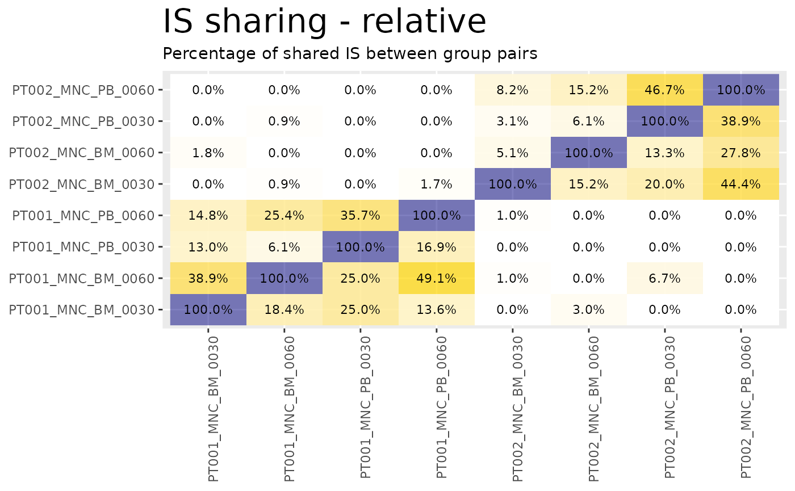
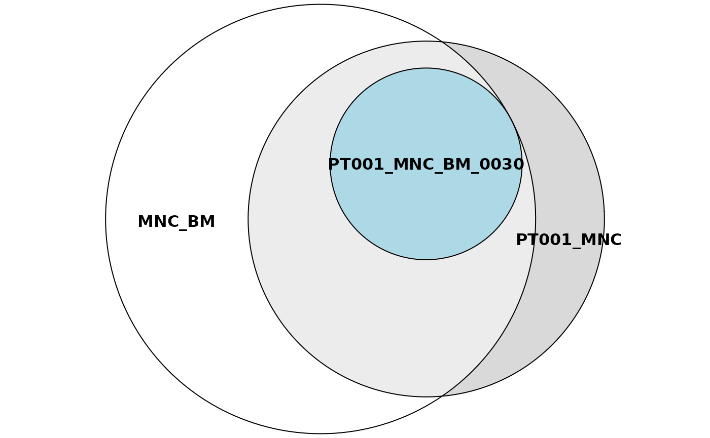

Sharing analyses with ISAnalytics
Giulia Pais
San Raffaele Telethon Institute for Gene Therapy - SR-Tiget, Via Olgettina 60, 20132 Milano - Italia
giuliapais1@gmail.com, calabria.andrea@hsr.it
21 September 2021
Source:vignettes/sharing_analyses.Rmd
sharing_analyses.RmdIntroduction
In this vignette we explain in more detail how to perform sharing analyses with ISAnalytics and its dedicated sharing functions.
Installation and options
ISAnalytics can be installed quickly in different ways:
- You can install it via Bioconductor
- You can install it via GitHub using the package
devtools
There are always 2 versions of the package active:
-
RELEASEis the latest stable version -
DEVELis the development version, it is the most up-to-date version where all new features are introduced
Installation from bioconductor
RELEASE version:
if (!requireNamespace("BiocManager", quietly = TRUE))
install.packages("BiocManager")
BiocManager::install("ISAnalytics")DEVEL version:
if (!requireNamespace("BiocManager", quietly = TRUE))
install.packages("BiocManager")
# The following initializes usage of Bioc devel
BiocManager::install(version='devel')
BiocManager::install("ISAnalytics")Installation from GitHub
RELEASE:
if (!require(devtools)) {
install.packages("devtools")
}
devtools::install_github("calabrialab/ISAnalytics",
ref = "RELEASE_3_13",
dependencies = TRUE,
build_vignettes = TRUE)DEVEL:
if (!require(devtools)) {
install.packages("devtools")
}
devtools::install_github("calabrialab/ISAnalytics",
ref = "master",
dependencies = TRUE,
build_vignettes = TRUE)Automated sharing counts
ISAnalytics provides the function is_sharing() for computing automated sharing counts. The function has several arguments that can be tuned according to user needs.
SCENARIO 1: single input data frame and single grouping key
sharing_1 <- is_sharing(agg,
group_key = c("SubjectID", "CellMarker",
"Tissue", "TimePoint"),
n_comp = 2,
is_count = TRUE,
relative_is_sharing = TRUE,
minimal = TRUE,
include_self_comp = FALSE,
keep_genomic_coord = TRUE)
#> Calculating combinations...
#> Done!
sharing_1
#> g1 g2 shared is_coord count_g1
#> 1: PT001_MNC_BM_0030 PT001_MNC_BM_0060 21 <data.table[21x3]> 54
#> 2: PT001_MNC_BM_0030 PT001_MNC_BM_0180 15 <data.table[15x3]> 54
#> 3: PT001_MNC_BM_0060 PT001_MNC_BM_0180 13 <data.table[13x3]> 114
#> 4: PT001_MNC_BM_0090 PT001_MNC_BM_0180 18 <data.table[18x3]> 59
#> 5: PT001_MNC_BM_0030 PT001_MNC_BM_0360 21 <data.table[21x3]> 54
#> ---
#> 186: PT001_MNC_BM_0090 PT002_MNC_PB_0090 0 <data.table[0x3]> 59
#> 187: PT002_MNC_BM_0060 PT002_MNC_PB_0090 4 <data.table[4x3]> 33
#> 188: PT002_MNC_BM_0090 PT002_MNC_PB_0090 2 <data.table[2x3]> 40
#> 189: PT001_MNC_PB_0090 PT002_MNC_PB_0090 0 <data.table[0x3]> 48
#> 190: PT001_MNC_PB_0360 PT002_MNC_PB_0090 0 <data.table[0x3]> 43
#> count_g2 count_union on_g1 on_g2 on_union
#> 1: 114 147 38.88889 18.421053 14.285714
#> 2: 89 128 27.77778 16.853933 11.718750
#> 3: 89 190 11.40351 14.606742 6.842105
#> 4: 89 130 30.50847 20.224719 13.846154
#> 5: 78 111 38.88889 26.923077 18.918919
#> ---
#> 186: 24 83 0.00000 0.000000 0.000000
#> 187: 24 53 12.12121 16.666667 7.547170
#> 188: 24 62 5.00000 8.333333 3.225806
#> 189: 24 72 0.00000 0.000000 0.000000
#> 190: 24 67 0.00000 0.000000 0.000000In this configuration we set:
- A single input data frame:
agg - A single grouping key by setting the argument
grouping_key. In this specific case, our groups will be identified by a unique combination ofSubjectID,CellMarker,TissueandTimePoint -
n_comprepresents the number of comparisons to compute: 2 means we’re interested in knowing the sharing for PAIRS of distinct groups - We want to keep the counts of distinct integration sites for each group by setting
is_counttoTRUE -
relative_is_sharingif set toTRUEadds sharing expressed as a percentage, more precisely it adds a columnon_g1that is calculated as the absolute number of shared integrations divided by the cardinality of the first group,on_g2is analogous but is computed on the cardinality of the second group and finallyon_unionis computed on the cardinality of the union of the two groups. - By setting the argument
minimaltoTRUEwe tell the function to avoid redundant comparisons: in this way only combinations and not permutations are included in the output table -
include_self_compadds rows in the table that are labelled with the same group: these rows always have a 100% sharing with all other groups. There are few scenarios where this is useful, but for now we set it toFALSEsince we don’t need it -
keep_genomic_coordallows us to keep the genomic coordinates of the shared integration sites as a separate table
Changing the number of comparisons
sharing_1_a <- is_sharing(agg,
group_key = c("SubjectID", "CellMarker",
"Tissue", "TimePoint"),
n_comp = 3,
is_count = TRUE,
relative_is_sharing = TRUE,
minimal = TRUE,
include_self_comp = FALSE,
keep_genomic_coord = TRUE)
#> Calculating combinations...
#> Done!
sharing_1_a
#> g1 g2 g3 shared
#> 1: PT001_MNC_BM_0030 PT001_MNC_BM_0060 PT001_MNC_BM_0180 8
#> 2: PT001_MNC_BM_0030 PT001_MNC_BM_0090 PT001_MNC_BM_0180 9
#> 3: PT001_MNC_BM_0060 PT001_MNC_BM_0090 PT001_MNC_BM_0180 8
#> 4: PT001_MNC_BM_0030 PT001_MNC_BM_0060 PT001_MNC_BM_0360 6
#> 5: PT001_MNC_BM_0030 PT001_MNC_BM_0180 PT001_MNC_BM_0360 9
#> ---
#> 1136: PT001_MNC_PB_0060 PT001_MNC_PB_0360 PT002_MNC_PB_0090 0
#> 1137: PT001_MNC_PB_0180 PT001_MNC_PB_0360 PT002_MNC_PB_0090 0
#> 1138: PT001_MNC_PB_0030 PT001_MNC_PB_0360 PT002_MNC_PB_0090 0
#> 1139: PT001_MNC_BM_0090 PT001_MNC_PB_0360 PT002_MNC_PB_0090 0
#> 1140: PT001_MNC_PB_0090 PT001_MNC_PB_0360 PT002_MNC_PB_0090 0
#> is_coord count_g1 count_g2 count_g3 count_union on_g1
#> 1: <data.table[8x3]> 54 114 89 216 14.814815
#> 2: <data.table[9x3]> 54 59 89 154 16.666667
#> 3: <data.table[8x3]> 114 59 89 228 7.017544
#> 4: <data.table[6x3]> 54 114 78 198 11.111111
#> 5: <data.table[9x3]> 54 89 78 147 16.666667
#> ---
#> 1136: <data.table[0x3]> 59 43 24 114 0.000000
#> 1137: <data.table[0x3]> 29 43 24 76 0.000000
#> 1138: <data.table[0x3]> 28 43 24 84 0.000000
#> 1139: <data.table[0x3]> 59 43 24 108 0.000000
#> 1140: <data.table[0x3]> 48 43 24 89 0.000000
#> on_g2 on_g3 on_union
#> 1: 7.017544 8.988764 3.703704
#> 2: 15.254237 10.112360 5.844156
#> 3: 13.559322 8.988764 3.508772
#> 4: 5.263158 7.692308 3.030303
#> 5: 10.112360 11.538462 6.122449
#> ---
#> 1136: 0.000000 0.000000 0.000000
#> 1137: 0.000000 0.000000 0.000000
#> 1138: 0.000000 0.000000 0.000000
#> 1139: 0.000000 0.000000 0.000000
#> 1140: 0.000000 0.000000 0.000000Changing the n_comp to 3 means that we want to calculate the sharing between 3 different groups. Note that the shared column contains the counts of integrations that are shared by ALL groups, which is equivalent to a set intersection.
Beware of the fact that the more comparisons are requested the more time the computation requires.
A case when it is useful to set minimal = FALSE
Setting minimal = FALSE produces all possible permutations of the groups and the corresponding values. In combination with include_self_comp = TRUE, this is useful when we want to know the sharing between pairs of groups and plot results as a heatmap.
sharing_1_b <- is_sharing(agg,
group_key = c("SubjectID", "CellMarker",
"Tissue", "TimePoint"),
n_comp = 2,
is_count = TRUE,
relative_is_sharing = TRUE,
minimal = FALSE,
include_self_comp = TRUE)
#> Calculating combinations...
#> Calculating self groups (requested)...
#> Calculating permutations (requested)...
#> Done!
sharing_1_b
#> g1 g2 shared count_g1 count_g2 count_union
#> 1: PT001_MNC_BM_0030 PT001_MNC_BM_0030 54 54 54 54
#> 2: PT001_MNC_BM_0030 PT001_MNC_BM_0060 21 54 114 147
#> 3: PT001_MNC_BM_0060 PT001_MNC_BM_0030 21 114 54 147
#> 4: PT001_MNC_BM_0060 PT001_MNC_BM_0060 114 114 114 114
#> 5: PT001_MNC_BM_0030 PT001_MNC_BM_0180 15 54 89 128
#> ---
#> 396: PT001_MNC_PB_0090 PT002_MNC_PB_0090 0 48 24 72
#> 397: PT002_MNC_PB_0090 PT001_MNC_PB_0090 0 24 48 72
#> 398: PT001_MNC_PB_0360 PT002_MNC_PB_0090 0 43 24 67
#> 399: PT002_MNC_PB_0090 PT001_MNC_PB_0360 0 24 43 67
#> 400: PT002_MNC_PB_0090 PT002_MNC_PB_0090 24 24 24 24
#> on_g1 on_g2 on_union
#> 1: 100.00000 100.00000 100.00000
#> 2: 38.88889 18.42105 14.28571
#> 3: 18.42105 38.88889 14.28571
#> 4: 100.00000 100.00000 100.00000
#> 5: 27.77778 16.85393 11.71875
#> ---
#> 396: 0.00000 0.00000 0.00000
#> 397: 0.00000 0.00000 0.00000
#> 398: 0.00000 0.00000 0.00000
#> 399: 0.00000 0.00000 0.00000
#> 400: 100.00000 100.00000 100.00000
heatmaps <- sharing_heatmap(sharing_1_b)The function sharing_heatmap() automatically plots sharing between 2 groups. There are several arguments to this function that allow us to obtain heatmaps for the absolute sharing values or the relative (percentage) values.
heatmaps$absolute
heatmaps$on_g1
heatmaps$on_union
Beware of the fact that calculating all permutations takes longer than calculating only distinct combinations, therefore if you don’t need your results plotted or you have more than 2 groups to compare you should stick with minimal = TRUE and include_self_comp = FALSE.
SCENARIO 2: single input data frame and multiple grouping keys
In the first scenario, groups were homogeneous, that is, they were grouped all with the same key. In this other scenario we want to start with data contained in just one data frame but we want to compare sets of integrations that are grouped differently. To do this we give as input a list of keys through the argument group_keys.
sharing_2 <- is_sharing(agg,
group_keys = list(
g1 = c("SubjectID", "CellMarker",
"Tissue", "TimePoint"),
g2 = c("SubjectID", "CellMarker"),
g3 = c("CellMarker", "Tissue")
))
#> Done!
sharing_2
#> g1 g2 g3 shared count_g1 count_g2 count_g3
#> 1: PT001_MNC_BM_0030 PT001_MNC MNC_BM 54 54 261 501
#> 2: PT001_MNC_BM_0060 PT001_MNC MNC_BM 114 114 261 501
#> 3: PT001_MNC_BM_0180 PT001_MNC MNC_BM 89 89 261 501
#> 4: PT001_MNC_BM_0360 PT001_MNC MNC_BM 78 78 261 501
#> 5: PT002_MNC_BM_0360 PT001_MNC MNC_BM 2 91 261 501
#> 6: PT001_MNC_PB_0060 PT001_MNC MNC_BM 52 59 261 501
#> 7: PT001_MNC_PB_0180 PT001_MNC MNC_BM 26 29 261 501
#> 8: PT002_MNC_PB_0360 PT001_MNC MNC_BM 3 53 261 501
#> 9: PT002_MNC_PB_0180 PT001_MNC MNC_BM 1 32 261 501
#> 10: PT002_MNC_BM_0030 PT001_MNC MNC_BM 1 98 261 501
#> 11: PT002_MNC_PB_0060 PT001_MNC MNC_BM 0 18 261 501
#> 12: PT002_MNC_PB_0030 PT001_MNC MNC_BM 1 15 261 501
#> 13: PT001_MNC_PB_0030 PT001_MNC MNC_BM 11 28 261 501
#> 14: PT002_MNC_BM_0180 PT001_MNC MNC_BM 1 69 261 501
#> 15: PT001_MNC_BM_0090 PT001_MNC MNC_BM 59 59 261 501
#> 16: PT002_MNC_BM_0060 PT001_MNC MNC_BM 1 33 261 501
#> 17: PT002_MNC_BM_0090 PT001_MNC MNC_BM 0 40 261 501
#> 18: PT001_MNC_PB_0090 PT001_MNC MNC_BM 38 48 261 501
#> 19: PT001_MNC_PB_0360 PT001_MNC MNC_BM 35 43 261 501
#> 20: PT002_MNC_PB_0090 PT001_MNC MNC_BM 0 24 261 501
#> 21: PT001_MNC_BM_0030 PT002_MNC MNC_BM 2 54 316 501
#> 22: PT001_MNC_BM_0060 PT002_MNC MNC_BM 3 114 316 501
#> 23: PT001_MNC_BM_0180 PT002_MNC MNC_BM 3 89 316 501
#> 24: PT001_MNC_BM_0360 PT002_MNC MNC_BM 4 78 316 501
#> 25: PT002_MNC_BM_0360 PT002_MNC MNC_BM 91 91 316 501
#> 26: PT001_MNC_PB_0060 PT002_MNC MNC_BM 3 59 316 501
#> 27: PT001_MNC_PB_0180 PT002_MNC MNC_BM 2 29 316 501
#> 28: PT002_MNC_PB_0360 PT002_MNC MNC_BM 7 53 316 501
#> 29: PT002_MNC_PB_0180 PT002_MNC MNC_BM 26 32 316 501
#> 30: PT002_MNC_BM_0030 PT002_MNC MNC_BM 98 98 316 501
#> 31: PT002_MNC_PB_0060 PT002_MNC MNC_BM 12 18 316 501
#> 32: PT002_MNC_PB_0030 PT002_MNC MNC_BM 9 15 316 501
#> 33: PT001_MNC_PB_0030 PT002_MNC MNC_BM 1 28 316 501
#> 34: PT002_MNC_BM_0180 PT002_MNC MNC_BM 69 69 316 501
#> 35: PT001_MNC_BM_0090 PT002_MNC MNC_BM 2 59 316 501
#> 36: PT002_MNC_BM_0060 PT002_MNC MNC_BM 33 33 316 501
#> 37: PT002_MNC_BM_0090 PT002_MNC MNC_BM 40 40 316 501
#> 38: PT001_MNC_PB_0090 PT002_MNC MNC_BM 3 48 316 501
#> 39: PT001_MNC_PB_0360 PT002_MNC MNC_BM 2 43 316 501
#> 40: PT002_MNC_PB_0090 PT002_MNC MNC_BM 18 24 316 501
#> 41: PT001_MNC_BM_0030 PT001_MNC MNC_PB 27 54 261 227
#> 42: PT001_MNC_BM_0060 PT001_MNC MNC_PB 46 114 261 227
#> 43: PT001_MNC_BM_0180 PT001_MNC MNC_PB 39 89 261 227
#> 44: PT001_MNC_BM_0360 PT001_MNC MNC_PB 41 78 261 227
#> 45: PT002_MNC_BM_0360 PT001_MNC MNC_PB 2 91 261 227
#> 46: PT001_MNC_PB_0060 PT001_MNC MNC_PB 59 59 261 227
#> 47: PT001_MNC_PB_0180 PT001_MNC MNC_PB 29 29 261 227
#> 48: PT002_MNC_PB_0360 PT001_MNC MNC_PB 3 53 261 227
#> 49: PT002_MNC_PB_0180 PT001_MNC MNC_PB 1 32 261 227
#> 50: PT002_MNC_BM_0030 PT001_MNC MNC_PB 1 98 261 227
#> 51: PT002_MNC_PB_0060 PT001_MNC MNC_PB 0 18 261 227
#> 52: PT002_MNC_PB_0030 PT001_MNC MNC_PB 1 15 261 227
#> 53: PT001_MNC_PB_0030 PT001_MNC MNC_PB 28 28 261 227
#> 54: PT002_MNC_BM_0180 PT001_MNC MNC_PB 1 69 261 227
#> 55: PT001_MNC_BM_0090 PT001_MNC MNC_PB 37 59 261 227
#> 56: PT002_MNC_BM_0060 PT001_MNC MNC_PB 1 33 261 227
#> 57: PT002_MNC_BM_0090 PT001_MNC MNC_PB 0 40 261 227
#> 58: PT001_MNC_PB_0090 PT001_MNC MNC_PB 48 48 261 227
#> 59: PT001_MNC_PB_0360 PT001_MNC MNC_PB 43 43 261 227
#> 60: PT002_MNC_PB_0090 PT001_MNC MNC_PB 0 24 261 227
#> 61: PT001_MNC_BM_0030 PT002_MNC MNC_PB 2 54 316 227
#> 62: PT001_MNC_BM_0060 PT002_MNC MNC_PB 3 114 316 227
#> 63: PT001_MNC_BM_0180 PT002_MNC MNC_PB 3 89 316 227
#> 64: PT001_MNC_BM_0360 PT002_MNC MNC_PB 4 78 316 227
#> 65: PT002_MNC_BM_0360 PT002_MNC MNC_PB 10 91 316 227
#> 66: PT001_MNC_PB_0060 PT002_MNC MNC_PB 3 59 316 227
#> 67: PT001_MNC_PB_0180 PT002_MNC MNC_PB 2 29 316 227
#> 68: PT002_MNC_PB_0360 PT002_MNC MNC_PB 53 53 316 227
#> 69: PT002_MNC_PB_0180 PT002_MNC MNC_PB 32 32 316 227
#> 70: PT002_MNC_BM_0030 PT002_MNC MNC_PB 31 98 316 227
#> 71: PT002_MNC_PB_0060 PT002_MNC MNC_PB 18 18 316 227
#> 72: PT002_MNC_PB_0030 PT002_MNC MNC_PB 15 15 316 227
#> 73: PT001_MNC_PB_0030 PT002_MNC MNC_PB 1 28 316 227
#> 74: PT002_MNC_BM_0180 PT002_MNC MNC_PB 26 69 316 227
#> 75: PT001_MNC_BM_0090 PT002_MNC MNC_PB 2 59 316 227
#> 76: PT002_MNC_BM_0060 PT002_MNC MNC_PB 12 33 316 227
#> 77: PT002_MNC_BM_0090 PT002_MNC MNC_PB 7 40 316 227
#> 78: PT001_MNC_PB_0090 PT002_MNC MNC_PB 3 48 316 227
#> 79: PT001_MNC_PB_0360 PT002_MNC MNC_PB 2 43 316 227
#> 80: PT002_MNC_PB_0090 PT002_MNC MNC_PB 24 24 316 227
#> g1 g2 g3 shared count_g1 count_g2 count_g3
#> count_union on_g1 on_g2 on_g3 on_union
#> 1: 521 100.000000 20.6896552 10.7784431 10.3646833
#> 2: 521 100.000000 43.6781609 22.7544910 21.8809981
#> 3: 521 100.000000 34.0996169 17.7644711 17.0825336
#> 4: 521 100.000000 29.8850575 15.5688623 14.9712092
#> 5: 521 2.197802 0.7662835 0.3992016 0.3838772
#> 6: 521 88.135593 19.9233716 10.3792415 9.9808061
#> 7: 521 89.655172 9.9616858 5.1896208 4.9904031
#> 8: 567 5.660377 1.1494253 0.5988024 0.5291005
#> 9: 527 3.125000 0.3831418 0.1996008 0.1897533
#> 10: 521 1.020408 0.3831418 0.1996008 0.1919386
#> 11: 527 0.000000 0.0000000 0.0000000 0.0000000
#> 12: 527 6.666667 0.3831418 0.1996008 0.1897533
#> 13: 521 39.285714 4.2145594 2.1956088 2.1113244
#> 14: 521 1.449275 0.3831418 0.1996008 0.1919386
#> 15: 521 100.000000 22.6053640 11.7764471 11.3243762
#> 16: 521 3.030303 0.3831418 0.1996008 0.1919386
#> 17: 521 0.000000 0.0000000 0.0000000 0.0000000
#> 18: 521 79.166667 14.5593870 7.5848303 7.2936660
#> 19: 521 81.395349 13.4099617 6.9860279 6.7178503
#> 20: 527 0.000000 0.0000000 0.0000000 0.0000000
#> 21: 547 3.703704 0.6329114 0.3992016 0.3656307
#> 22: 547 2.631579 0.9493671 0.5988024 0.5484461
#> 23: 547 3.370787 0.9493671 0.5988024 0.5484461
#> 24: 547 5.128205 1.2658228 0.7984032 0.7312614
#> 25: 547 100.000000 28.7974684 18.1636727 16.6361974
#> 26: 554 5.084746 0.9493671 0.5988024 0.5415162
#> 27: 550 6.896552 0.6329114 0.3992016 0.3636364
#> 28: 547 13.207547 2.2151899 1.3972056 1.2797075
#> 29: 547 81.250000 8.2278481 5.1896208 4.7531993
#> 30: 547 100.000000 31.0126582 19.5608782 17.9159049
#> 31: 547 66.666667 3.7974684 2.3952096 2.1937843
#> 32: 547 60.000000 2.8481013 1.7964072 1.6453382
#> 33: 564 3.571429 0.3164557 0.1996008 0.1773050
#> 34: 547 100.000000 21.8354430 13.7724551 12.6142596
#> 35: 547 3.389831 0.6329114 0.3992016 0.3656307
#> 36: 547 100.000000 10.4430380 6.5868263 6.0329068
#> 37: 547 100.000000 12.6582278 7.9840319 7.3126143
#> 38: 557 6.250000 0.9493671 0.5988024 0.5385996
#> 39: 555 4.651163 0.6329114 0.3992016 0.3603604
#> 40: 547 75.000000 5.6962025 3.5928144 3.2906764
#> 41: 365 50.000000 10.3448276 11.8942731 7.3972603
#> 42: 365 40.350877 17.6245211 20.2643172 12.6027397
#> 43: 365 43.820225 14.9425287 17.1806167 10.6849315
#> 44: 365 52.564103 15.7088123 18.0616740 11.2328767
#> 45: 446 2.197802 0.7662835 0.8810573 0.4484305
#> 46: 365 100.000000 22.6053640 25.9911894 16.1643836
#> 47: 365 100.000000 11.1111111 12.7753304 7.9452055
#> 48: 365 5.660377 1.1494253 1.3215859 0.8219178
#> 49: 365 3.125000 0.3831418 0.4405286 0.2739726
#> 50: 432 1.020408 0.3831418 0.4405286 0.2314815
#> 51: 365 0.000000 0.0000000 0.0000000 0.0000000
#> 52: 365 6.666667 0.3831418 0.4405286 0.2739726
#> 53: 365 100.000000 10.7279693 12.3348018 7.6712329
#> 54: 408 1.449275 0.3831418 0.4405286 0.2450980
#> 55: 365 62.711864 14.1762452 16.2995595 10.1369863
#> 56: 386 3.030303 0.3831418 0.4405286 0.2590674
#> 57: 398 0.000000 0.0000000 0.0000000 0.0000000
#> 58: 365 100.000000 18.3908046 21.1453744 13.1506849
#> 59: 365 100.000000 16.4750958 18.9427313 11.7808219
#> 60: 365 0.000000 0.0000000 0.0000000 0.0000000
#> 61: 456 3.703704 0.6329114 0.8810573 0.4385965
#> 62: 497 2.631579 0.9493671 1.3215859 0.6036217
#> 63: 479 3.370787 0.9493671 1.3215859 0.6263048
#> 64: 466 5.128205 1.2658228 1.7621145 0.8583691
#> 65: 429 10.989011 3.1645570 4.4052863 2.3310023
#> 66: 429 5.084746 0.9493671 1.3215859 0.6993007
#> 67: 429 6.896552 0.6329114 0.8810573 0.4662005
#> 68: 429 100.000000 16.7721519 23.3480176 12.3543124
#> 69: 429 100.000000 10.1265823 14.0969163 7.4592075
#> 70: 429 31.632653 9.8101266 13.6563877 7.2261072
#> 71: 429 100.000000 5.6962025 7.9295154 4.1958042
#> 72: 429 100.000000 4.7468354 6.6079295 3.4965035
#> 73: 429 3.571429 0.3164557 0.4405286 0.2331002
#> 74: 429 37.681159 8.2278481 11.4537445 6.0606061
#> 75: 451 3.389831 0.6329114 0.8810573 0.4434590
#> 76: 429 36.363636 3.7974684 5.2863436 2.7972028
#> 77: 429 17.500000 2.2151899 3.0837004 1.6317016
#> 78: 429 6.250000 0.9493671 1.3215859 0.6993007
#> 79: 429 4.651163 0.6329114 0.8810573 0.4662005
#> 80: 429 100.000000 7.5949367 10.5726872 5.5944056
#> count_union on_g1 on_g2 on_g3 on_unionThere are a few things to keep in mind in this case:
- The arguments
group_key(notice the absence of plural),n_compandinclude_self_compare ignored: the number of comparisons is automatically detected by counting the provided keys and a self comparison doesn’t make sense since group labels are different - If you provide a list of identical keys or just one key you fall back to scenario 1
SCENARIO 3: multiple input data frame and single grouping key
Providing multiple input data frames and the same grouping key is an effective way to reduce the number of comparisons performed. Let’s make an example: suppose we’re interested in comparing groups labelled by a unique combination of SubjectID, CellMarker, Tissue and TimePoint, but this time we want the first group to contain only integrations relative to PT001_MNC_BM_0030 and the second group to contain only integrations relative to PT001_MNC_BM_0060.
We’re going to filter the original data frame in order to obtain only relevant data in 2 separated tables and then proceed by calling the function.
first_sample <- agg %>%
dplyr::filter(SubjectID == "PT001", CellMarker == "MNC", Tissue == "BM",
TimePoint == "0030")
second_sample <- agg %>%
dplyr::filter(SubjectID == "PT001", CellMarker == "MNC", Tissue == "BM",
TimePoint == "0060")
sharing_3 <- is_sharing(first_sample, second_sample,
group_key = c("SubjectID", "CellMarker",
"Tissue", "TimePoint"),
is_count = TRUE,
relative_is_sharing = TRUE,
minimal = TRUE)
#> Done!
sharing_3
#> g1 g2 shared count_g1 count_g2 count_union
#> 1: PT001_MNC_BM_0030 PT001_MNC_BM_0060 21 54 114 147
#> on_g1 on_g2 on_union
#> 1: 38.88889 18.42105 14.28571Once again the arguments n_comp and include_self_comp are ignored: the number of comparisons is equal to the number of data frames in input.
SCENARIO 4: multiple input data frame and multiple grouping keys
Finally, the most general scenario is when we have multiple data frames with multiple keys. In this case the number of data frames must be equal to the number of provided keys and grouping keys are applied in order ( data frame 1 is grouped with key 1, data frame 2 is grouped with key 2, and so on).
df1 <- agg %>%
dplyr::filter(TimePoint == "0030")
df2 <- agg %>%
dplyr::filter(TimePoint == "0060")
df3 <- agg %>%
dplyr::filter(TimePoint == "0180")
keys <- list(g1 = c("SubjectID", "CellMarker", "Tissue"),
g2 = c("SubjectID", "Tissue"),
g3 = c("SubjectID", "CellMarker", "Tissue"))
sharing_4 <- is_sharing(df1, df2, df3, group_keys = keys)
#> Done!
sharing_4
#> g1 g2 g3 shared count_g1 count_g2 count_g3
#> 1: PT001_MNC_BM PT001_BM PT001_MNC_BM 8 54 114 89
#> 2: PT002_MNC_BM PT001_BM PT001_MNC_BM 0 98 114 89
#> 3: PT002_MNC_PB PT001_BM PT001_MNC_BM 0 15 114 89
#> 4: PT001_MNC_PB PT001_BM PT001_MNC_BM 0 28 114 89
#> 5: PT001_MNC_BM PT001_PB PT001_MNC_BM 8 54 59 89
#> 6: PT002_MNC_BM PT001_PB PT001_MNC_BM 0 98 59 89
#> 7: PT002_MNC_PB PT001_PB PT001_MNC_BM 0 15 59 89
#> 8: PT001_MNC_PB PT001_PB PT001_MNC_BM 0 28 59 89
#> 9: PT001_MNC_BM PT002_PB PT001_MNC_BM 0 54 18 89
#> 10: PT002_MNC_BM PT002_PB PT001_MNC_BM 0 98 18 89
#> 11: PT002_MNC_PB PT002_PB PT001_MNC_BM 0 15 18 89
#> 12: PT001_MNC_PB PT002_PB PT001_MNC_BM 0 28 18 89
#> 13: PT001_MNC_BM PT002_BM PT001_MNC_BM 0 54 33 89
#> 14: PT002_MNC_BM PT002_BM PT001_MNC_BM 0 98 33 89
#> 15: PT002_MNC_PB PT002_BM PT001_MNC_BM 0 15 33 89
#> 16: PT001_MNC_PB PT002_BM PT001_MNC_BM 0 28 33 89
#> 17: PT001_MNC_BM PT001_BM PT001_MNC_PB 0 54 114 29
#> 18: PT002_MNC_BM PT001_BM PT001_MNC_PB 0 98 114 29
#> 19: PT002_MNC_PB PT001_BM PT001_MNC_PB 0 15 114 29
#> 20: PT001_MNC_PB PT001_BM PT001_MNC_PB 0 28 114 29
#> 21: PT001_MNC_BM PT001_PB PT001_MNC_PB 0 54 59 29
#> 22: PT002_MNC_BM PT001_PB PT001_MNC_PB 0 98 59 29
#> 23: PT002_MNC_PB PT001_PB PT001_MNC_PB 0 15 59 29
#> 24: PT001_MNC_PB PT001_PB PT001_MNC_PB 0 28 59 29
#> 25: PT001_MNC_BM PT002_PB PT001_MNC_PB 0 54 18 29
#> 26: PT002_MNC_BM PT002_PB PT001_MNC_PB 0 98 18 29
#> 27: PT002_MNC_PB PT002_PB PT001_MNC_PB 0 15 18 29
#> 28: PT001_MNC_PB PT002_PB PT001_MNC_PB 0 28 18 29
#> 29: PT001_MNC_BM PT002_BM PT001_MNC_PB 0 54 33 29
#> 30: PT002_MNC_BM PT002_BM PT001_MNC_PB 0 98 33 29
#> 31: PT002_MNC_PB PT002_BM PT001_MNC_PB 0 15 33 29
#> 32: PT001_MNC_PB PT002_BM PT001_MNC_PB 0 28 33 29
#> 33: PT001_MNC_BM PT001_BM PT002_MNC_PB 0 54 114 32
#> 34: PT002_MNC_BM PT001_BM PT002_MNC_PB 0 98 114 32
#> 35: PT002_MNC_PB PT001_BM PT002_MNC_PB 0 15 114 32
#> 36: PT001_MNC_PB PT001_BM PT002_MNC_PB 0 28 114 32
#> 37: PT001_MNC_BM PT001_PB PT002_MNC_PB 0 54 59 32
#> 38: PT002_MNC_BM PT001_PB PT002_MNC_PB 0 98 59 32
#> 39: PT002_MNC_PB PT001_PB PT002_MNC_PB 0 15 59 32
#> 40: PT001_MNC_PB PT001_PB PT002_MNC_PB 0 28 59 32
#> 41: PT001_MNC_BM PT002_PB PT002_MNC_PB 0 54 18 32
#> 42: PT002_MNC_BM PT002_PB PT002_MNC_PB 0 98 18 32
#> 43: PT002_MNC_PB PT002_PB PT002_MNC_PB 6 15 18 32
#> 44: PT001_MNC_PB PT002_PB PT002_MNC_PB 0 28 18 32
#> 45: PT001_MNC_BM PT002_BM PT002_MNC_PB 0 54 33 32
#> 46: PT002_MNC_BM PT002_BM PT002_MNC_PB 0 98 33 32
#> 47: PT002_MNC_PB PT002_BM PT002_MNC_PB 0 15 33 32
#> 48: PT001_MNC_PB PT002_BM PT002_MNC_PB 0 28 33 32
#> 49: PT001_MNC_BM PT001_BM PT002_MNC_BM 0 54 114 69
#> 50: PT002_MNC_BM PT001_BM PT002_MNC_BM 0 98 114 69
#> 51: PT002_MNC_PB PT001_BM PT002_MNC_BM 0 15 114 69
#> 52: PT001_MNC_PB PT001_BM PT002_MNC_BM 0 28 114 69
#> 53: PT001_MNC_BM PT001_PB PT002_MNC_BM 0 54 59 69
#> 54: PT002_MNC_BM PT001_PB PT002_MNC_BM 0 98 59 69
#> 55: PT002_MNC_PB PT001_PB PT002_MNC_BM 0 15 59 69
#> 56: PT001_MNC_PB PT001_PB PT002_MNC_BM 0 28 59 69
#> 57: PT001_MNC_BM PT002_PB PT002_MNC_BM 0 54 18 69
#> 58: PT002_MNC_BM PT002_PB PT002_MNC_BM 3 98 18 69
#> 59: PT002_MNC_PB PT002_PB PT002_MNC_BM 0 15 18 69
#> 60: PT001_MNC_PB PT002_PB PT002_MNC_BM 0 28 18 69
#> 61: PT001_MNC_BM PT002_BM PT002_MNC_BM 0 54 33 69
#> 62: PT002_MNC_BM PT002_BM PT002_MNC_BM 3 98 33 69
#> 63: PT002_MNC_PB PT002_BM PT002_MNC_BM 0 15 33 69
#> 64: PT001_MNC_PB PT002_BM PT002_MNC_BM 0 28 33 69
#> g1 g2 g3 shared count_g1 count_g2 count_g3
#> count_union on_g1 on_g2 on_g3 on_union
#> 1: 216 14.814815 7.017544 8.988764 3.703704
#> 2: 370 0.000000 0.000000 0.000000 0.000000
#> 3: 255 0.000000 0.000000 0.000000 0.000000
#> 4: 240 0.000000 0.000000 0.000000 0.000000
#> 5: 160 14.814815 13.559322 8.988764 5.000000
#> 6: 314 0.000000 0.000000 0.000000 0.000000
#> 7: 201 0.000000 0.000000 0.000000 0.000000
#> 8: 188 0.000000 0.000000 0.000000 0.000000
#> 9: 146 0.000000 0.000000 0.000000 0.000000
#> 10: 291 0.000000 0.000000 0.000000 0.000000
#> 11: 180 0.000000 0.000000 0.000000 0.000000
#> 12: 189 0.000000 0.000000 0.000000 0.000000
#> 13: 160 0.000000 0.000000 0.000000 0.000000
#> 14: 299 0.000000 0.000000 0.000000 0.000000
#> 15: 196 0.000000 0.000000 0.000000 0.000000
#> 16: 203 0.000000 0.000000 0.000000 0.000000
#> 17: 240 0.000000 0.000000 0.000000 0.000000
#> 18: 297 0.000000 0.000000 0.000000 0.000000
#> 19: 183 0.000000 0.000000 0.000000 0.000000
#> 20: 144 0.000000 0.000000 0.000000 0.000000
#> 21: 188 0.000000 0.000000 0.000000 0.000000
#> 22: 248 0.000000 0.000000 0.000000 0.000000
#> 23: 135 0.000000 0.000000 0.000000 0.000000
#> 24: 95 0.000000 0.000000 0.000000 0.000000
#> 25: 189 0.000000 0.000000 0.000000 0.000000
#> 26: 219 0.000000 0.000000 0.000000 0.000000
#> 27: 108 0.000000 0.000000 0.000000 0.000000
#> 28: 75 0.000000 0.000000 0.000000 0.000000
#> 29: 203 0.000000 0.000000 0.000000 0.000000
#> 30: 228 0.000000 0.000000 0.000000 0.000000
#> 31: 125 0.000000 0.000000 0.000000 0.000000
#> 32: 90 0.000000 0.000000 0.000000 0.000000
#> 33: 255 0.000000 0.000000 0.000000 0.000000
#> 34: 279 0.000000 0.000000 0.000000 0.000000
#> 35: 153 0.000000 0.000000 0.000000 0.000000
#> 36: 183 0.000000 0.000000 0.000000 0.000000
#> 37: 201 0.000000 0.000000 0.000000 0.000000
#> 38: 226 0.000000 0.000000 0.000000 0.000000
#> 39: 100 0.000000 0.000000 0.000000 0.000000
#> 40: 135 0.000000 0.000000 0.000000 0.000000
#> 41: 180 0.000000 0.000000 0.000000 0.000000
#> 42: 170 0.000000 0.000000 0.000000 0.000000
#> 43: 52 40.000000 33.333333 18.750000 11.538462
#> 44: 108 0.000000 0.000000 0.000000 0.000000
#> 45: 196 0.000000 0.000000 0.000000 0.000000
#> 46: 184 0.000000 0.000000 0.000000 0.000000
#> 47: 69 0.000000 0.000000 0.000000 0.000000
#> 48: 125 0.000000 0.000000 0.000000 0.000000
#> 49: 370 0.000000 0.000000 0.000000 0.000000
#> 50: 268 0.000000 0.000000 0.000000 0.000000
#> 51: 279 0.000000 0.000000 0.000000 0.000000
#> 52: 297 0.000000 0.000000 0.000000 0.000000
#> 53: 314 0.000000 0.000000 0.000000 0.000000
#> 54: 213 0.000000 0.000000 0.000000 0.000000
#> 55: 226 0.000000 0.000000 0.000000 0.000000
#> 56: 248 0.000000 0.000000 0.000000 0.000000
#> 57: 291 0.000000 0.000000 0.000000 0.000000
#> 58: 163 3.061224 16.666667 4.347826 1.840491
#> 59: 170 0.000000 0.000000 0.000000 0.000000
#> 60: 219 0.000000 0.000000 0.000000 0.000000
#> 61: 299 0.000000 0.000000 0.000000 0.000000
#> 62: 172 3.061224 9.090909 4.347826 1.744186
#> 63: 184 0.000000 0.000000 0.000000 0.000000
#> 64: 228 0.000000 0.000000 0.000000 0.000000
#> count_union on_g1 on_g2 on_g3 on_unionNotice that in this example the keys for g1 and g3 are the same, meaning the labels of the groups are actually the same, however you should remember that the groups contain a different set of integration sites since they come from different data frames.
Plotting sharing results
When we have more than 2 comparisons it is convenient to plot them as venn or euler diagrams. ISAnalytics has a fast way to do that through the functions is_sharing() and sharing_venn().
sharing_5 <- is_sharing(agg,
group_keys = list(
g1 = c("SubjectID", "CellMarker",
"Tissue", "TimePoint"),
g2 = c("SubjectID", "CellMarker"),
g3 = c("CellMarker", "Tissue")
), table_for_venn = TRUE)
#> Done!
sharing_5
#> g1 g2 g3 shared count_g1 count_g2 count_g3
#> 1: PT001_MNC_BM_0030 PT001_MNC MNC_BM 54 54 261 501
#> 2: PT001_MNC_BM_0060 PT001_MNC MNC_BM 114 114 261 501
#> 3: PT001_MNC_BM_0180 PT001_MNC MNC_BM 89 89 261 501
#> 4: PT001_MNC_BM_0360 PT001_MNC MNC_BM 78 78 261 501
#> 5: PT002_MNC_BM_0360 PT001_MNC MNC_BM 2 91 261 501
#> 6: PT001_MNC_PB_0060 PT001_MNC MNC_BM 52 59 261 501
#> 7: PT001_MNC_PB_0180 PT001_MNC MNC_BM 26 29 261 501
#> 8: PT002_MNC_PB_0360 PT001_MNC MNC_BM 3 53 261 501
#> 9: PT002_MNC_PB_0180 PT001_MNC MNC_BM 1 32 261 501
#> 10: PT002_MNC_BM_0030 PT001_MNC MNC_BM 1 98 261 501
#> 11: PT002_MNC_PB_0060 PT001_MNC MNC_BM 0 18 261 501
#> 12: PT002_MNC_PB_0030 PT001_MNC MNC_BM 1 15 261 501
#> 13: PT001_MNC_PB_0030 PT001_MNC MNC_BM 11 28 261 501
#> 14: PT002_MNC_BM_0180 PT001_MNC MNC_BM 1 69 261 501
#> 15: PT001_MNC_BM_0090 PT001_MNC MNC_BM 59 59 261 501
#> 16: PT002_MNC_BM_0060 PT001_MNC MNC_BM 1 33 261 501
#> 17: PT002_MNC_BM_0090 PT001_MNC MNC_BM 0 40 261 501
#> 18: PT001_MNC_PB_0090 PT001_MNC MNC_BM 38 48 261 501
#> 19: PT001_MNC_PB_0360 PT001_MNC MNC_BM 35 43 261 501
#> 20: PT002_MNC_PB_0090 PT001_MNC MNC_BM 0 24 261 501
#> 21: PT001_MNC_BM_0030 PT002_MNC MNC_BM 2 54 316 501
#> 22: PT001_MNC_BM_0060 PT002_MNC MNC_BM 3 114 316 501
#> 23: PT001_MNC_BM_0180 PT002_MNC MNC_BM 3 89 316 501
#> 24: PT001_MNC_BM_0360 PT002_MNC MNC_BM 4 78 316 501
#> 25: PT002_MNC_BM_0360 PT002_MNC MNC_BM 91 91 316 501
#> 26: PT001_MNC_PB_0060 PT002_MNC MNC_BM 3 59 316 501
#> 27: PT001_MNC_PB_0180 PT002_MNC MNC_BM 2 29 316 501
#> 28: PT002_MNC_PB_0360 PT002_MNC MNC_BM 7 53 316 501
#> 29: PT002_MNC_PB_0180 PT002_MNC MNC_BM 26 32 316 501
#> 30: PT002_MNC_BM_0030 PT002_MNC MNC_BM 98 98 316 501
#> 31: PT002_MNC_PB_0060 PT002_MNC MNC_BM 12 18 316 501
#> 32: PT002_MNC_PB_0030 PT002_MNC MNC_BM 9 15 316 501
#> 33: PT001_MNC_PB_0030 PT002_MNC MNC_BM 1 28 316 501
#> 34: PT002_MNC_BM_0180 PT002_MNC MNC_BM 69 69 316 501
#> 35: PT001_MNC_BM_0090 PT002_MNC MNC_BM 2 59 316 501
#> 36: PT002_MNC_BM_0060 PT002_MNC MNC_BM 33 33 316 501
#> 37: PT002_MNC_BM_0090 PT002_MNC MNC_BM 40 40 316 501
#> 38: PT001_MNC_PB_0090 PT002_MNC MNC_BM 3 48 316 501
#> 39: PT001_MNC_PB_0360 PT002_MNC MNC_BM 2 43 316 501
#> 40: PT002_MNC_PB_0090 PT002_MNC MNC_BM 18 24 316 501
#> 41: PT001_MNC_BM_0030 PT001_MNC MNC_PB 27 54 261 227
#> 42: PT001_MNC_BM_0060 PT001_MNC MNC_PB 46 114 261 227
#> 43: PT001_MNC_BM_0180 PT001_MNC MNC_PB 39 89 261 227
#> 44: PT001_MNC_BM_0360 PT001_MNC MNC_PB 41 78 261 227
#> 45: PT002_MNC_BM_0360 PT001_MNC MNC_PB 2 91 261 227
#> 46: PT001_MNC_PB_0060 PT001_MNC MNC_PB 59 59 261 227
#> 47: PT001_MNC_PB_0180 PT001_MNC MNC_PB 29 29 261 227
#> 48: PT002_MNC_PB_0360 PT001_MNC MNC_PB 3 53 261 227
#> 49: PT002_MNC_PB_0180 PT001_MNC MNC_PB 1 32 261 227
#> 50: PT002_MNC_BM_0030 PT001_MNC MNC_PB 1 98 261 227
#> 51: PT002_MNC_PB_0060 PT001_MNC MNC_PB 0 18 261 227
#> 52: PT002_MNC_PB_0030 PT001_MNC MNC_PB 1 15 261 227
#> 53: PT001_MNC_PB_0030 PT001_MNC MNC_PB 28 28 261 227
#> 54: PT002_MNC_BM_0180 PT001_MNC MNC_PB 1 69 261 227
#> 55: PT001_MNC_BM_0090 PT001_MNC MNC_PB 37 59 261 227
#> 56: PT002_MNC_BM_0060 PT001_MNC MNC_PB 1 33 261 227
#> 57: PT002_MNC_BM_0090 PT001_MNC MNC_PB 0 40 261 227
#> 58: PT001_MNC_PB_0090 PT001_MNC MNC_PB 48 48 261 227
#> 59: PT001_MNC_PB_0360 PT001_MNC MNC_PB 43 43 261 227
#> 60: PT002_MNC_PB_0090 PT001_MNC MNC_PB 0 24 261 227
#> 61: PT001_MNC_BM_0030 PT002_MNC MNC_PB 2 54 316 227
#> 62: PT001_MNC_BM_0060 PT002_MNC MNC_PB 3 114 316 227
#> 63: PT001_MNC_BM_0180 PT002_MNC MNC_PB 3 89 316 227
#> 64: PT001_MNC_BM_0360 PT002_MNC MNC_PB 4 78 316 227
#> 65: PT002_MNC_BM_0360 PT002_MNC MNC_PB 10 91 316 227
#> 66: PT001_MNC_PB_0060 PT002_MNC MNC_PB 3 59 316 227
#> 67: PT001_MNC_PB_0180 PT002_MNC MNC_PB 2 29 316 227
#> 68: PT002_MNC_PB_0360 PT002_MNC MNC_PB 53 53 316 227
#> 69: PT002_MNC_PB_0180 PT002_MNC MNC_PB 32 32 316 227
#> 70: PT002_MNC_BM_0030 PT002_MNC MNC_PB 31 98 316 227
#> 71: PT002_MNC_PB_0060 PT002_MNC MNC_PB 18 18 316 227
#> 72: PT002_MNC_PB_0030 PT002_MNC MNC_PB 15 15 316 227
#> 73: PT001_MNC_PB_0030 PT002_MNC MNC_PB 1 28 316 227
#> 74: PT002_MNC_BM_0180 PT002_MNC MNC_PB 26 69 316 227
#> 75: PT001_MNC_BM_0090 PT002_MNC MNC_PB 2 59 316 227
#> 76: PT002_MNC_BM_0060 PT002_MNC MNC_PB 12 33 316 227
#> 77: PT002_MNC_BM_0090 PT002_MNC MNC_PB 7 40 316 227
#> 78: PT001_MNC_PB_0090 PT002_MNC MNC_PB 3 48 316 227
#> 79: PT001_MNC_PB_0360 PT002_MNC MNC_PB 2 43 316 227
#> 80: PT002_MNC_PB_0090 PT002_MNC MNC_PB 24 24 316 227
#> g1 g2 g3 shared count_g1 count_g2 count_g3
#> count_union on_g1 on_g2 on_g3 on_union truth_tbl_venn
#> 1: 521 100.000000 20.6896552 10.7784431 10.3646833 <data.table[521x4]>
#> 2: 521 100.000000 43.6781609 22.7544910 21.8809981 <data.table[521x4]>
#> 3: 521 100.000000 34.0996169 17.7644711 17.0825336 <data.table[521x4]>
#> 4: 521 100.000000 29.8850575 15.5688623 14.9712092 <data.table[521x4]>
#> 5: 521 2.197802 0.7662835 0.3992016 0.3838772 <data.table[521x4]>
#> 6: 521 88.135593 19.9233716 10.3792415 9.9808061 <data.table[521x4]>
#> 7: 521 89.655172 9.9616858 5.1896208 4.9904031 <data.table[521x4]>
#> 8: 567 5.660377 1.1494253 0.5988024 0.5291005 <data.table[567x4]>
#> 9: 527 3.125000 0.3831418 0.1996008 0.1897533 <data.table[527x4]>
#> 10: 521 1.020408 0.3831418 0.1996008 0.1919386 <data.table[521x4]>
#> 11: 527 0.000000 0.0000000 0.0000000 0.0000000 <data.table[527x4]>
#> 12: 527 6.666667 0.3831418 0.1996008 0.1897533 <data.table[527x4]>
#> 13: 521 39.285714 4.2145594 2.1956088 2.1113244 <data.table[521x4]>
#> 14: 521 1.449275 0.3831418 0.1996008 0.1919386 <data.table[521x4]>
#> 15: 521 100.000000 22.6053640 11.7764471 11.3243762 <data.table[521x4]>
#> 16: 521 3.030303 0.3831418 0.1996008 0.1919386 <data.table[521x4]>
#> 17: 521 0.000000 0.0000000 0.0000000 0.0000000 <data.table[521x4]>
#> 18: 521 79.166667 14.5593870 7.5848303 7.2936660 <data.table[521x4]>
#> 19: 521 81.395349 13.4099617 6.9860279 6.7178503 <data.table[521x4]>
#> 20: 527 0.000000 0.0000000 0.0000000 0.0000000 <data.table[527x4]>
#> 21: 547 3.703704 0.6329114 0.3992016 0.3656307 <data.table[547x4]>
#> 22: 547 2.631579 0.9493671 0.5988024 0.5484461 <data.table[547x4]>
#> 23: 547 3.370787 0.9493671 0.5988024 0.5484461 <data.table[547x4]>
#> 24: 547 5.128205 1.2658228 0.7984032 0.7312614 <data.table[547x4]>
#> 25: 547 100.000000 28.7974684 18.1636727 16.6361974 <data.table[547x4]>
#> 26: 554 5.084746 0.9493671 0.5988024 0.5415162 <data.table[554x4]>
#> 27: 550 6.896552 0.6329114 0.3992016 0.3636364 <data.table[550x4]>
#> 28: 547 13.207547 2.2151899 1.3972056 1.2797075 <data.table[547x4]>
#> 29: 547 81.250000 8.2278481 5.1896208 4.7531993 <data.table[547x4]>
#> 30: 547 100.000000 31.0126582 19.5608782 17.9159049 <data.table[547x4]>
#> 31: 547 66.666667 3.7974684 2.3952096 2.1937843 <data.table[547x4]>
#> 32: 547 60.000000 2.8481013 1.7964072 1.6453382 <data.table[547x4]>
#> 33: 564 3.571429 0.3164557 0.1996008 0.1773050 <data.table[564x4]>
#> 34: 547 100.000000 21.8354430 13.7724551 12.6142596 <data.table[547x4]>
#> 35: 547 3.389831 0.6329114 0.3992016 0.3656307 <data.table[547x4]>
#> 36: 547 100.000000 10.4430380 6.5868263 6.0329068 <data.table[547x4]>
#> 37: 547 100.000000 12.6582278 7.9840319 7.3126143 <data.table[547x4]>
#> 38: 557 6.250000 0.9493671 0.5988024 0.5385996 <data.table[557x4]>
#> 39: 555 4.651163 0.6329114 0.3992016 0.3603604 <data.table[555x4]>
#> 40: 547 75.000000 5.6962025 3.5928144 3.2906764 <data.table[547x4]>
#> 41: 365 50.000000 10.3448276 11.8942731 7.3972603 <data.table[365x4]>
#> 42: 365 40.350877 17.6245211 20.2643172 12.6027397 <data.table[365x4]>
#> 43: 365 43.820225 14.9425287 17.1806167 10.6849315 <data.table[365x4]>
#> 44: 365 52.564103 15.7088123 18.0616740 11.2328767 <data.table[365x4]>
#> 45: 446 2.197802 0.7662835 0.8810573 0.4484305 <data.table[446x4]>
#> 46: 365 100.000000 22.6053640 25.9911894 16.1643836 <data.table[365x4]>
#> 47: 365 100.000000 11.1111111 12.7753304 7.9452055 <data.table[365x4]>
#> 48: 365 5.660377 1.1494253 1.3215859 0.8219178 <data.table[365x4]>
#> 49: 365 3.125000 0.3831418 0.4405286 0.2739726 <data.table[365x4]>
#> 50: 432 1.020408 0.3831418 0.4405286 0.2314815 <data.table[432x4]>
#> 51: 365 0.000000 0.0000000 0.0000000 0.0000000 <data.table[365x4]>
#> 52: 365 6.666667 0.3831418 0.4405286 0.2739726 <data.table[365x4]>
#> 53: 365 100.000000 10.7279693 12.3348018 7.6712329 <data.table[365x4]>
#> 54: 408 1.449275 0.3831418 0.4405286 0.2450980 <data.table[408x4]>
#> 55: 365 62.711864 14.1762452 16.2995595 10.1369863 <data.table[365x4]>
#> 56: 386 3.030303 0.3831418 0.4405286 0.2590674 <data.table[386x4]>
#> 57: 398 0.000000 0.0000000 0.0000000 0.0000000 <data.table[398x4]>
#> 58: 365 100.000000 18.3908046 21.1453744 13.1506849 <data.table[365x4]>
#> 59: 365 100.000000 16.4750958 18.9427313 11.7808219 <data.table[365x4]>
#> 60: 365 0.000000 0.0000000 0.0000000 0.0000000 <data.table[365x4]>
#> 61: 456 3.703704 0.6329114 0.8810573 0.4385965 <data.table[456x4]>
#> 62: 497 2.631579 0.9493671 1.3215859 0.6036217 <data.table[497x4]>
#> 63: 479 3.370787 0.9493671 1.3215859 0.6263048 <data.table[479x4]>
#> 64: 466 5.128205 1.2658228 1.7621145 0.8583691 <data.table[466x4]>
#> 65: 429 10.989011 3.1645570 4.4052863 2.3310023 <data.table[429x4]>
#> 66: 429 5.084746 0.9493671 1.3215859 0.6993007 <data.table[429x4]>
#> 67: 429 6.896552 0.6329114 0.8810573 0.4662005 <data.table[429x4]>
#> 68: 429 100.000000 16.7721519 23.3480176 12.3543124 <data.table[429x4]>
#> 69: 429 100.000000 10.1265823 14.0969163 7.4592075 <data.table[429x4]>
#> 70: 429 31.632653 9.8101266 13.6563877 7.2261072 <data.table[429x4]>
#> 71: 429 100.000000 5.6962025 7.9295154 4.1958042 <data.table[429x4]>
#> 72: 429 100.000000 4.7468354 6.6079295 3.4965035 <data.table[429x4]>
#> 73: 429 3.571429 0.3164557 0.4405286 0.2331002 <data.table[429x4]>
#> 74: 429 37.681159 8.2278481 11.4537445 6.0606061 <data.table[429x4]>
#> 75: 451 3.389831 0.6329114 0.8810573 0.4434590 <data.table[451x4]>
#> 76: 429 36.363636 3.7974684 5.2863436 2.7972028 <data.table[429x4]>
#> 77: 429 17.500000 2.2151899 3.0837004 1.6317016 <data.table[429x4]>
#> 78: 429 6.250000 0.9493671 1.3215859 0.6993007 <data.table[429x4]>
#> 79: 429 4.651163 0.6329114 0.8810573 0.4662005 <data.table[429x4]>
#> 80: 429 100.000000 7.5949367 10.5726872 5.5944056 <data.table[429x4]>
#> count_union on_g1 on_g2 on_g3 on_union truth_tbl_vennThe argument table_for_venn = TRUE will add a new column truth_tbl_venn that contains corresponding truth tables for each row.
sharing_plots1 <- sharing_venn(sharing_5, row_range = 1, euler = TRUE)
sharing_plots2 <- sharing_venn(sharing_5, row_range = 1, euler = FALSE)Say that we’re interested in plotting just the first row of our sharing data frame. Then we can call the function sharing_venn and specify in the row_range argument the index 1. Note that this function requires the package eulerr to work. The argument euler indicates if the function should produce euler or venn diagrams instead.
Once obtained the lists of euler/venn objects we can plot them by simply calling the function plot():
plot(sharing_plots1[[1]])
plot(sharing_plots2[[1]])
There are several options that can be set, for this please refer to eulerr docs.
Reproducibility
R session information.
#> ─ Session info ───────────────────────────────────────────────────────────────────────────────────────────────────────
#> setting value
#> version R version 4.1.1 (2021-08-10)
#> os macOS Catalina 10.15.7
#> system x86_64, darwin17.0
#> ui X11
#> language (EN)
#> collate en_US.UTF-8
#> ctype en_US.UTF-8
#> tz UTC
#> date 2021-09-21
#>
#> ─ Packages ───────────────────────────────────────────────────────────────────────────────────────────────────────────
#> package * version date lib source
#> BiocManager 1.30.16 2021-06-15 [1] CRAN (R 4.1.0)
#> BiocParallel 1.26.2 2021-08-22 [1] Bioconductor
#> BiocStyle * 2.20.2 2021-06-17 [1] Bioconductor
#> bookdown 0.24 2021-09-02 [1] CRAN (R 4.1.0)
#> bslib 0.3.0 2021-09-02 [1] CRAN (R 4.1.0)
#> cachem 1.0.6 2021-08-19 [1] CRAN (R 4.1.0)
#> cli 3.0.1 2021-07-17 [1] CRAN (R 4.1.0)
#> colorspace 2.0-2 2021-06-24 [1] CRAN (R 4.1.0)
#> crayon 1.4.1 2021-02-08 [1] CRAN (R 4.1.0)
#> crosstalk 1.1.1 2021-01-12 [1] CRAN (R 4.1.0)
#> data.table 1.14.0 2021-02-21 [1] CRAN (R 4.1.0)
#> desc 1.3.0 2021-03-05 [1] CRAN (R 4.1.0)
#> digest 0.6.27 2020-10-24 [1] CRAN (R 4.1.0)
#> dplyr 1.0.7 2021-06-18 [1] CRAN (R 4.1.0)
#> DT 0.19 2021-09-02 [1] CRAN (R 4.1.0)
#> ellipsis 0.3.2 2021-04-29 [1] CRAN (R 4.1.0)
#> eulerr 6.1.1 2021-09-06 [1] CRAN (R 4.1.0)
#> evaluate 0.14 2019-05-28 [1] CRAN (R 4.1.0)
#> fansi 0.5.0 2021-05-25 [1] CRAN (R 4.1.0)
#> farver 2.1.0 2021-02-28 [1] CRAN (R 4.1.0)
#> fastmap 1.1.0 2021-01-25 [1] CRAN (R 4.1.0)
#> fs 1.5.0 2020-07-31 [1] CRAN (R 4.1.0)
#> generics 0.1.0 2020-10-31 [1] CRAN (R 4.1.0)
#> ggplot2 3.3.5 2021-06-25 [1] CRAN (R 4.1.0)
#> ggrepel 0.9.1 2021-01-15 [1] CRAN (R 4.1.0)
#> glue 1.4.2 2020-08-27 [1] CRAN (R 4.1.0)
#> gtable 0.3.0 2019-03-25 [1] CRAN (R 4.1.0)
#> gtools 3.9.2 2021-06-06 [1] CRAN (R 4.1.0)
#> highr 0.9 2021-04-16 [1] CRAN (R 4.1.0)
#> hms 1.1.0 2021-05-17 [1] CRAN (R 4.1.0)
#> htmltools 0.5.2 2021-08-25 [1] CRAN (R 4.1.0)
#> htmlwidgets 1.5.4 2021-09-08 [1] CRAN (R 4.1.0)
#> httr 1.4.2 2020-07-20 [1] CRAN (R 4.1.0)
#> ISAnalytics * 1.3.5 2021-09-21 [1] Bioconductor
#> jquerylib 0.1.4 2021-04-26 [1] CRAN (R 4.1.0)
#> jsonlite 1.7.2 2020-12-09 [1] CRAN (R 4.1.0)
#> knitr 1.34 2021-09-09 [1] CRAN (R 4.1.0)
#> lifecycle 1.0.0 2021-02-15 [1] CRAN (R 4.1.0)
#> lubridate 1.7.10 2021-02-26 [1] CRAN (R 4.1.0)
#> magrittr * 2.0.1 2020-11-17 [1] CRAN (R 4.1.0)
#> memoise 2.0.0 2021-01-26 [1] CRAN (R 4.1.0)
#> munsell 0.5.0 2018-06-12 [1] CRAN (R 4.1.0)
#> pillar 1.6.2 2021-07-29 [1] CRAN (R 4.1.0)
#> pkgconfig 2.0.3 2019-09-22 [1] CRAN (R 4.1.0)
#> pkgdown 1.6.1 2020-09-12 [1] CRAN (R 4.1.0)
#> plyr 1.8.6 2020-03-03 [1] CRAN (R 4.1.0)
#> polyclip 1.10-0 2019-03-14 [1] CRAN (R 4.1.0)
#> polylabelr 0.2.0 2020-04-19 [1] CRAN (R 4.1.0)
#> purrr 0.3.4 2020-04-17 [1] CRAN (R 4.1.0)
#> R6 2.5.1 2021-08-19 [1] CRAN (R 4.1.0)
#> ragg 1.1.3 2021-06-09 [1] CRAN (R 4.1.0)
#> Rcapture 1.4-3 2019-12-16 [1] CRAN (R 4.1.0)
#> Rcpp 1.0.7 2021-07-07 [1] CRAN (R 4.1.0)
#> readr 2.0.1 2021-08-10 [1] CRAN (R 4.1.0)
#> RefManageR * 1.3.0 2020-11-13 [1] CRAN (R 4.1.0)
#> rlang 0.4.11 2021-04-30 [1] CRAN (R 4.1.0)
#> rmarkdown 2.11 2021-09-14 [1] CRAN (R 4.1.0)
#> rprojroot 2.0.2 2020-11-15 [1] CRAN (R 4.1.0)
#> sass 0.4.0 2021-05-12 [1] CRAN (R 4.1.0)
#> scales 1.1.1 2020-05-11 [1] CRAN (R 4.1.0)
#> sessioninfo * 1.1.1 2018-11-05 [1] CRAN (R 4.1.0)
#> stringi 1.7.4 2021-08-25 [1] CRAN (R 4.1.0)
#> stringr 1.4.0 2019-02-10 [1] CRAN (R 4.1.0)
#> systemfonts 1.0.2 2021-05-11 [1] CRAN (R 4.1.0)
#> textshaping 0.3.5 2021-06-09 [1] CRAN (R 4.1.0)
#> tibble 3.1.4 2021-08-25 [1] CRAN (R 4.1.0)
#> tidyr 1.1.3 2021-03-03 [1] CRAN (R 4.1.0)
#> tidyselect 1.1.1 2021-04-30 [1] CRAN (R 4.1.0)
#> tzdb 0.1.2 2021-07-20 [1] CRAN (R 4.1.0)
#> utf8 1.2.2 2021-07-24 [1] CRAN (R 4.1.0)
#> vctrs 0.3.8 2021-04-29 [1] CRAN (R 4.1.0)
#> withr 2.4.2 2021-04-18 [1] CRAN (R 4.1.0)
#> xfun 0.26 2021-09-14 [1] CRAN (R 4.1.0)
#> xml2 1.3.2 2020-04-23 [1] CRAN (R 4.1.0)
#> yaml 2.2.1 2020-02-01 [1] CRAN (R 4.1.0)
#> zip 2.2.0 2021-05-31 [1] CRAN (R 4.1.0)
#>
#> [1] /Users/runner/work/_temp/Library
#> [2] /Library/Frameworks/R.framework/Versions/4.1/Resources/libraryBibliography
This vignette was generated using BiocStyle (Oleś, 2021) with knitr (Xie, 2021) and rmarkdown (Allaire, Xie, McPherson, Luraschi, Ushey, Atkins, Wickham, Cheng, Chang, and Iannone, 2021) running behind the scenes.
Citations made with RefManageR (McLean, 2017).
[1] J. Allaire, Y. Xie, J. McPherson, et al. rmarkdown: Dynamic Documents for R. R package version 2.11. 2021. URL: https://github.com/rstudio/rmarkdown.
[2] M. W. McLean. “RefManageR: Import and Manage BibTeX and BibLaTeX References in R”. In: The Journal of Open Source Software (2017). DOI: 10.21105/joss.00338.
[3] A. Oleś. BiocStyle: Standard styles for vignettes and other Bioconductor documents. R package version 2.20.2. 2021. URL: https://github.com/Bioconductor/BiocStyle.
[4] Y. Xie. knitr: A General-Purpose Package for Dynamic Report Generation in R. R package version 1.34. 2021. URL: https://yihui.org/knitr/.